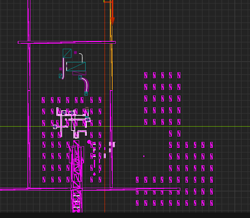
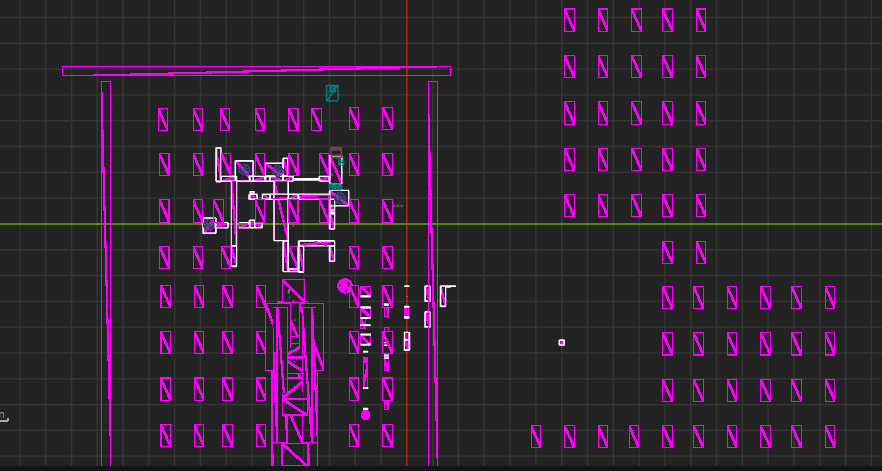

This month focused on improving practical usability of transformation systems, expanding designer controls, and adding new core systems in C++ for smoother level workflow and interaction design.
November Snapshot
Built a reference level to demonstrate Move and Grow Transformation use cases for the design team.
Added new Grow parameters for width control and construction behavior tuning.
Developed a custom C++ Level Transition Manager with Blueprint-friendly workflow.
Extended Move Transformation with both static-mesh rotation and spline-path rotation.
Week 1
Transformation Showcase Level
This week my game director asked me to design a level that showcases practical usage of both the Move Transformation and Grow Transformation systems. I built a reference level that demonstrated multiple ways these systems can be integrated into gameplay scenarios.
The goal was to provide level designers with concrete examples of layout flow, timing, and interaction patterns so they could better understand the flexibility and potential of these systems. Although the level was later removed by the design team, it successfully served as a teaching and reference tool and was acknowledged by my director.
Note: only wireframe documentation is available because the full version was removed before final screenshots and gameplay capture were taken.
Wireframe Layout 1

Wireframe Layout 2

Week 2
Grow Parameter Improvements
I improved the Grow Transformation system based on designer feedback requesting stronger control over structure width and walkable space around the player. I added two new parameters: DesiredMeters and ConstructionOffset.
DesiredMeters: controls fixed-size scaling of the grow block without changing spline length.
ConstructionOffset: adjusts fade and visibility progression across meshes during construction.
Current update visibility is runtime-only, not live in editor, due to system limitations.
Required workflow after value edits: save, clean PCG, regenerate PCG.
Real-time dynamic updates were tested but caused instability; final implementation prioritizes reliability.
Grow Parameter Update Preview
Week 3
Custom Level Transition Manager
This week I developed a custom Level Transition Manager in C++ to simplify and standardize level transitions for our project. Compared to Unreal's default transition workflow, this version is tailored for our production needs and designer usage patterns.
The system is integrated through Unreal's Blueprint C++ framework, so designers can use a single Transition to Level node to define target level name, optional fade, and transition duration with minimal setup.
I also recorded a tutorial for designers so the system can be adopted quickly and consistently across levels.
Level Transition Manager Preview
Level Transition Manager Tutorial for Designers
Week 4
Move Rotation Feature
In the final week before semester break, I added rotation support to the Move Transformation system based on director feedback. To cover multiple level-design needs, I implemented two rotation modes.
Rotation of the static mesh itself.
Rotation along the spline path.
Expanded designer control for dynamic movement behavior and interaction scenarios.
I also recorded a tutorial for designers explaining how to configure and use the new rotation feature effectively.